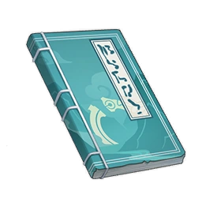

Liyue · Books & Literature
Springs of Hidden Jade
This two-volume Liyue tale follows an unnamed young cultivator and an unnamed adeptal woman through a night of old stories. Its account of a daughter of time and three fallen sisters echoes moon lore, but identifies neither the figures nor their history.

A night in a bamboo valley
The first volume opens at dawn, when a young cultivator wakes in a secluded bamboo grove and finds a golden-eyed woman leaning over him. The narration calls her an adeptus and describes her platinum hair, white robe, and pearly raincoat and hat, but gives neither character a name.
She has been telling him stories through the night. Their walk visits secluded adeptal homes, an unfinished chess game, the underwater court of deceased gods, abandoned mountain settlements, and the dreams of fish under the springs. The tale is framed as a meeting and a conversation, not a historian’s report.
What the adeptus says about mortal time
The young man wonders why mortals attach themselves to individual points in the past and seek their echoes. The adeptus replies that she might forget him in a moment, then agrees to answer his question by telling another story.
This transition makes the second volume’s cosmological language part of her oral account. It can preserve meaningful traditions while leaving the identity of each speaker and the exact historical truth uncertain.
A daughter of time in three peoples’ traditions
In the closing tale, mountain people call a figure time’s daughter and compare her to a white horse leaping from a pure spring. Shepherds of the plains remember a golden-white foal that guides migration, while an undersea kingdom imagines the figure with scales and tail plumage and worships the light she brings.
The same figure is cast differently by each community. The book does not name the mountain people, shepherds, undersea kingdom, or the mother said to share the daughter’s nature. The white-horse image is a community’s metaphor in this story, not a universal rule for becoming an adeptus.
Three fallen sisters and the broken sky
The tale says that a moon palace collapsed, a chariot fell, and three sisters were slain. It connects those losses with a calamity, the fall of old peoples, and a new order imposed by the heavens; afterward, the stars and earth no longer move as before.
The parallels to later Three Moon Goddess revelations are strong, but this book does not name the sisters or say that its account is a literal record. Read it alongside later quest dialogue while keeping its poetic and anonymous form in view.
The young man leaves without an answer
At dawn the man asks the adeptus where she came from and what her name is. She laughs and does not answer. Many years later he has become a sword teacher and founded a sect, yet still cannot understand her final story.
That unresolved ending is a useful boundary: readers may compare the text with Three Moon and time lore, but the story itself preserves no definitive identity for its two travelers or its ancient figures.
This is an original CoreGG reading guide, not an official HoYoverse article or a reproduction of the game text. Source links below identify the records used so you can check the original context.
Sources & references
Check these sources for the original game text and reference trail.